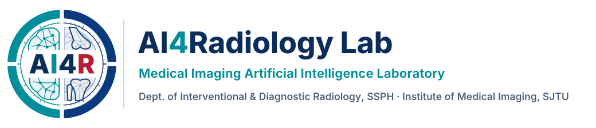
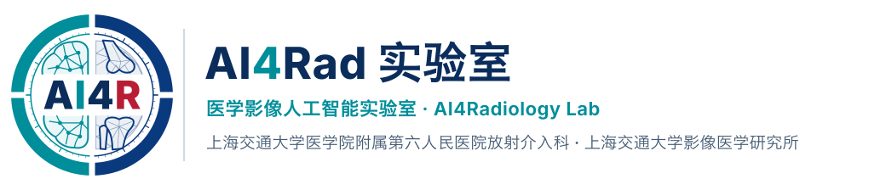

About AI4Rad Lab
Led by Prof. Yuehua Li (Vice President of Shanghai Sixth People's Hospital; National-Level Talent) with three independent Principal Investigators (PIs), AI4Rad Lab is affiliated with the Institute of Medical Imaging at Shanghai Jiao Tong University and the Department of Interventional & Diagnostic Radiology at Shanghai Sixth People's Hospital, uniting clinicians, AI researchers, postdoctoral fellows, and graduate students.
Host Institutions & Clinical Department
Institute of Medical Imaging, SJTU · AI4Rad Lab
Directed by Prof. Yuehua Li (Vice President of Shanghai Sixth People's Hospital, National-Level Talent, and Executive Director of the Institute of Medical Imaging at Shanghai Jiao Tong University) alongside three independent Principal Investigators (PIs), the laboratory brings together attending radiologists, engineering scholars, postdoctoral fellows, and graduate students across Shanghai Jiao Tong University's medical–engineering ecosystem.
Department of Interventional & Diagnostic Radiology, SSPH
The Department of Interventional & Diagnostic Radiology at Shanghai Sixth People's Hospital is a National Key Clinical Specialty and a Shanghai Top-Priority Key Discipline, integrating high-volume diagnostic imaging with minimally invasive interventional therapy. Equipped with fleets of high-field MRI, advanced multi-detector CT, and DSA suites, the department is nationally recognized in cerebrovascular and stroke neuroimaging, musculoskeletal radiology, and neuro/peripheral vascular interventions.
Mission & Research Goals
Methods Grounded in Clinical Practice
We study how AI extracts diagnostically meaningful representations from CT, MRI, and multimodal clinical records to support disease detection, risk stratification, emergency triage, and structured reporting — evaluating reliability through external cohorts and radiologist reader studies.
Quantitative Phenotypes & Mechanisms
Beyond diagnostic classification, we investigate how high-resolution reconstruction, 3D anatomical modeling, vascular hemodynamics, and musculoskeletal biomechanics link imaging phenotypes with underlying physiological and pathological processes.
Research Platform & Funding Support
Our lab operates dedicated in-house high-performance GPU computing and petabyte-scale clinical imaging storage, backed by sustained national research funding to support foundation-model training, multicenter cohort curation, and student research.
In-House High-Performance Compute
Equipped with a dedicated 100-GPU-scale high-performance computing cluster (>100 kW power capacity), enabling queue-free self-supervised pretraining on 100,000+ 3D CT/MRI scans, multimodal LLM fine-tuning, and large-scale biomechanical simulation.
Petabyte-Scale Imaging Storage
Supported by dedicated petabyte-scale storage arrays for secure governance and high-throughput training across multimodal clinical cohorts, decade-long longitudinal follow-up studies, and paired clinical / micro-CT datasets.
National Projects & Sustained Funding
Over the past five years, team investigators have led more than 10 national-level research grants with total funding exceeding ¥10 million RMB — providing strong support for methodological innovation, multicenter clinical trials, talent training, and academic exchange.
Clinical Imaging Directions
Our four methodological pillars — vision foundation models, multimodal large language models, image generation & reconstruction, and spatial intelligence & physical simulation — are organized around seven clinical radiology domains at Shanghai Sixth People's Hospital.
- Pan-Vascular & Hemodynamic Imaging Cerebrovascular, coronary, carotid, aortic, and peripheral vascular anatomy, perfusion, thrombus characterization, and hemodynamic risk events.
- Musculoskeletal & Bone Quantitative Imaging Spine, joints, tendons, fractures, trabecular micro-architecture, and quantitative bone metabolism across clinical CT, MRI, and micro-CT.
- Oncologic Imaging & Whole-Body Metastasis Imaging-based tumor detection, staging, whole-body skeletal metastasis assessment, treatment response, and radiologic–pathologic correlation.
- Emergency & Acute Care Imaging Time-critical head, chest, and non-contrast acute abdominal triage, intracranial trauma risk assessment, and emergency decision support.
- Longitudinal Chronic Disease Cohorts Mining multi-timepoint hospital imaging cohorts to model disease progression, biomarker trajectories, and long-term clinical outcomes.
- Radiology Education & Reporting Feedback Criteria-guided structured reporting, diagnostic impression evaluation, quality assurance, and human–AI collaborative reader workflows.
- Emerging Imaging Technologies & Translation Algorithmic adaptation, quantitative imaging evaluation, and clinical translation for emerging medical imaging sequences and reconstruction technologies.
How We Work
Clinician–Engineer Pairing
Radiologists and AI researchers collaborate from problem formulation and cohort curation through task-chain design and error analysis.
Multicenter & Reader Studies
Models are tested across independent clinical centers and structured multi-reader studies rather than single-center retrospective splits alone.
Benchmarks & Reproducibility
We release curated benchmarks, paired datasets, and open-source reference implementations so the community can verify and build on our work.
Explore our Team, browse peer-reviewed work under Publications, or reach out via Contact.
Visual Identity System & Brand Assets
Our visual emblem frames a four-quadrant CT/MRI scanner gantry and polar calibration ring around two clinical-engineering hemispheres: a neurovascular AI graph cortex on the left (SSPH Medical Teal) and a musculoskeletal joint with 3D finite-element / trabecular mesh on the right (Academic Navy), centered on the AI4R monogram accented in SJTU/arterial crimson. All official marks are pure zero-font-dependency vector SVGs across three optical sizes.





